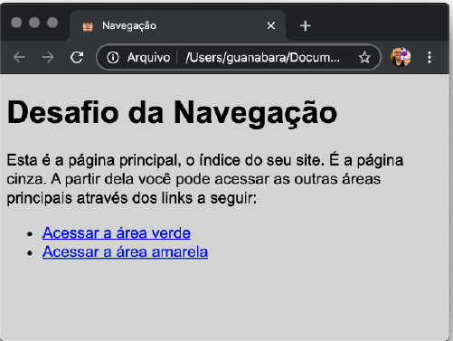
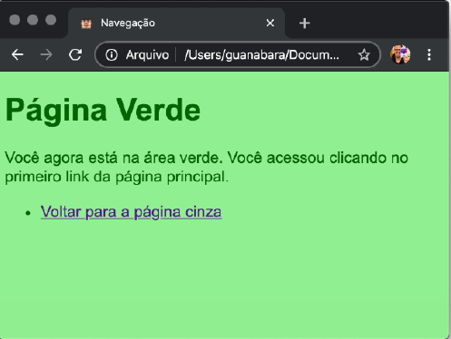

Criando uma Navegação
O desafio dessa vez é criar navegação entre páginas. Você deve criar uma página simples, que está representada a seguir:
Desafio Criando uma Navegação
 
O desafio dessa vez é criar navegação entre páginas. Você deve criar uma página simples, que está representada a seguir: